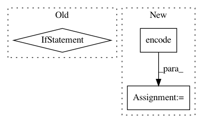

ef498e8aa5cdfe09247d9c9efc7ef636378165c2,python/ray/serve/policy.py,PowerOfTwoPolicy,flush,#PowerOfTwoPolicy#Any#Any#,102
Before Change
assigned_backends = set()
while endpoint_queue.qsize():
if len(self.backend_names) >= 2:
backend1, backend2 = np.random.choice(
self.backend_names,
2,
replace=False,
p=self.backend_weights)
// Choose the backend that has a shorter queue.
if (len(backend_queues[backend1]) <= len(
backend_queues[backend2])):
chosen_backend = backend1
else:
chosen_backend = backend2
else:
chosen_backend = np.random.choice(
self.backend_names, replace=False,
p=self.backend_weights).squeeze()
backend_queues[chosen_backend].add(await endpoint_queue.get())
assigned_backends.add(chosen_backend)
return assigned_backends
After Change
if query.shard_key is None:
rstate = np.random
else:
sha256_seed = sha256(query.shard_key.encode("utf-8"))
seed = np.frombuffer(sha256_seed.digest(), dtype=np.uint32)
rstate = np.random.RandomState(seed)
chosen_backend = rstate.choice(
self.backend_names, replace=False,
p=self.backend_weights).squeeze()
In pattern: SUPERPATTERN
Frequency: 3
Non-data size: 3
Instances
Project Name: ray-project/ray
Commit Name: ef498e8aa5cdfe09247d9c9efc7ef636378165c2
Time: 2020-05-15
Author: ed.nmi.oakes@gmail.com
File Name: python/ray/serve/policy.py
Class Name: PowerOfTwoPolicy
Method Name: flush
Project Name: hanxiao/bert-as-service
Commit Name: d97188ee62bc0627235578485c5df7d3245fa1ed
Time: 2018-12-02
Author: hanhxiao@tencent.com
File Name: example6.py
Class Name:
Method Name:
Project Name: NifTK/NiftyNet
Commit Name: 200e3be0929599459ee5d1100b3076b9188ecf25
Time: 2017-10-26
Author: wenqi.li@ucl.ac.uk
File Name: tests/resampler_grid_warper_test.py
Class Name:
Method Name: